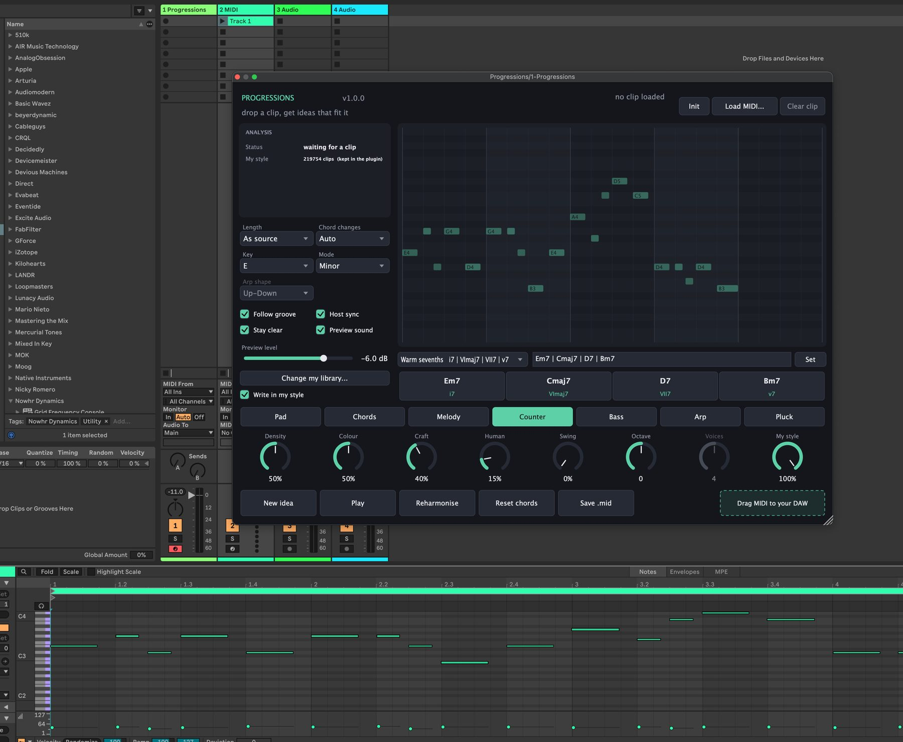
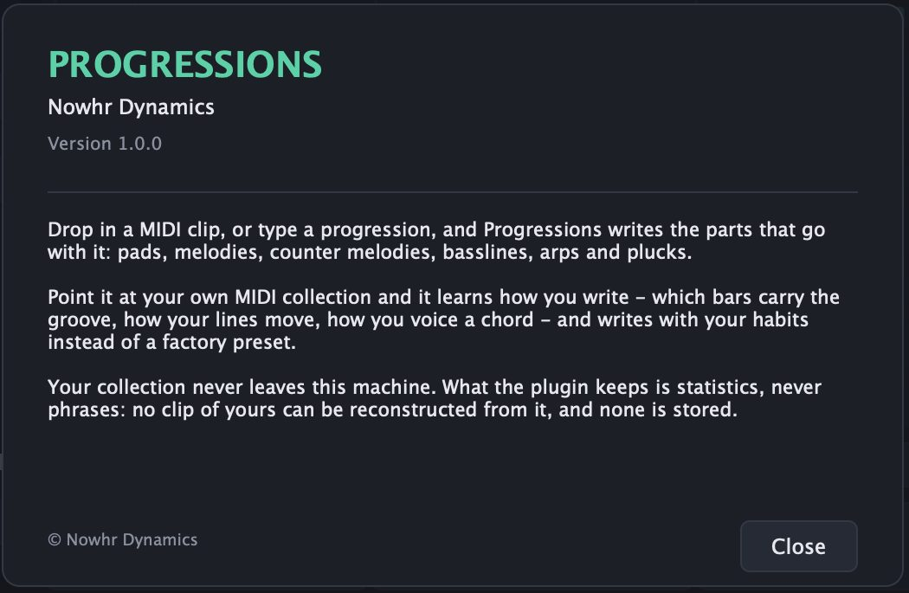

Progressions
Drop a clip, get ideas that fit it. Progressions reads the harmony behind a MIDI clip — or takes the progression you type — and writes pads, chords, melodies, counter melodies, basslines, arps and plucks over it. Then you drag the result onto the timeline. Solte um clipe, receba ideias que combinam com ele. O Progressions lê a harmonia por trás de um clipe MIDI — ou aceita a progressão que você digitar — e escreve pads, acordes, melodias, contracantos, baixos, arpejos e plucks por cima. Depois é só arrastar o resultado para a timeline.

What it doesO que ele faz
Three ways in, one place they all land Três caminhos de entrada, um lugar onde todos chegam
A clip you drop, a progression you type, or a preset you pick. Whichever you use, the plugin ends up with the same thing: a key, a chord grid, a groove — and everything after that is written on top of it. Um clipe que você solta, uma progressão que você digita, ou um preset que você escolhe. Não importa qual, o plugin termina com a mesma coisa: uma tonalidade, uma grade de acordes, um groove — e tudo depois disso é escrito em cima.
It works out what your clip is doing Ele descobre o que o seu clipe está fazendo
Key with a confidence figure, the chord grid, tempo and meter, the register the clip occupies, how many notes a bar it plays — and what kind of part it reads as. A monophonic bass and a wide lead are analysed differently on purpose, because a bass carries the root and a lead does not. Tonalidade com um índice de confiança, a grade de acordes, andamento e compasso, o registro que o clipe ocupa, quantas notas por compasso ele toca — e que tipo de parte ele é. Um baixo monofônico e um lead largo são analisados de formas diferentes de propósito, porque um baixo carrega a fundamental e um lead não.

Seven parts, and each one hears the last Sete partes, e cada uma escuta a anterior
Pad, Chords, Melody, Counter, Bass, Arp and Pluck. The pad does real voice leading — it looks for the inversion that moves least. The melody builds a short motif and then works it: inversion, retrograde, fragmentation, passing notes. The counter melody is pushed into contrary motion and forbidden from doubling your notes. Pad, Chords, Melody, Counter, Bass, Arp e Pluck. O pad faz condução de vozes de verdade — procura a inversão que menos se movimenta. A melodia constrói um motivo curto e depois o trabalha: inversão, retrógrado, fragmentação, notas de passagem. O contracanto é empurrado para movimento contrário e proibido de dobrar as suas notas.

It can learn to write like you Ele pode aprender a escrever como você
Point it at your MIDI folder and it reads the collection in the background — which sixteenths your bars land on, how your lines move in scale steps, what you play over a root, how wide you voice a chord. What it keeps is counts, never phrases: nothing you wrote can be reconstructed from it, and nothing you wrote is stored. Aponte para a sua pasta de MIDIs e ele lê a coleção em segundo plano — em quais semicolcheias os seus compassos caem, como as suas linhas se movem em graus, o que você toca sobre uma fundamental, quão aberto você faz um acorde. O que fica são contagens, nunca frases: nada que você escreveu pode ser reconstruído dali, e nada que você escreveu é guardado.

Beta accessAcesso ao beta
Get the Progressions beta Pegue o beta do Progressions
Leave your details and the download links appear right here. I use them to send you beta updates and nothing else. Deixe seus dados e os links de download aparecem aqui mesmo. Eu uso isso para te avisar das atualizações do beta e mais nada.
You're inPronto
Progressions 1.0.0 beta. Grab the build for your system, then follow the three steps below. Progressions 1.0.0 beta. Pegue a versão do seu sistema e siga os três passos abaixo.
- Unzip the download. You get Progressions.vst3. Descompacte o download. Você recebe o Progressions.vst3.
-
Copy it into
~/Library/Audio/Plug-Ins/VST3/Nowhr Dynamics/. Create theNowhr Dynamicsfolder if it is not there — the DAW scans the VST3 folder recursively, so the subfolder only keeps things tidy. Copie para~/Library/Audio/Plug-Ins/VST3/Nowhr Dynamics/. Crie a pastaNowhr Dynamicsse ela não existir — o DAW varre a pasta VST3 recursivamente, então a subpasta só serve para organizar. - Rescan your plugins in the DAW. Progressions shows up as an instrument, not an effect. Mande o DAW reescanear os plugins. O Progressions aparece como instrumento, não como efeito.
xattr -dr com.apple.quarantine ~/Library/Audio/Plug-Ins/VST3/Nowhr\ Dynamics/Progressions.vst3- Unzip the download. You get Progressions.vst3. Descompacte o download. Você recebe o Progressions.vst3.
-
Copy it into
C:\Program Files\Common Files\VST3\Nowhr Dynamics\. Create theNowhr Dynamicsfolder if it is not there. Copie paraC:\Program Files\Common Files\VST3\Nowhr Dynamics\. Crie a pastaNowhr Dynamicsse ela não existir. - Rescan your plugins in the DAW. Progressions shows up as an instrument, not an effect. Mande o DAW reescanear os plugins. O Progressions aparece como instrumento, não como efeito.
Program Files asks for administrator rights. If you would
rather not give them, any folder your DAW is set to scan works just as well.
Copiar para Program Files pede permissão de administrador. Se preferir
não dar, qualquer pasta que o seu DAW esteja configurado para varrer serve igual.
Mini manualMini manual
Every control, and what it changes Cada controle, e o que ele muda
1. Getting started1. Primeiros passos
Load Progressions as an instrument on a MIDI track. There are three ways to give it harmony, and they all end in the same place: Carregue o Progressions como instrumento numa pista MIDI. Há três jeitos de dar harmonia a ele, e todos terminam no mesmo lugar:
-
Drop a
.midfile anywhere on the window, or use Load MIDI…. It can be a bass, a pad, a lead or a pluck — the plugin figures out which. Solte um arquivo.midem qualquer lugar da janela, ou use Load MIDI…. Pode ser um baixo, um pad, um lead ou um pluck — o plugin descobre qual é. - Type a progression into the field under the piano roll and press Enter, or click Set. Digite uma progressão no campo embaixo do piano roll e aperte Enter, ou clique em Set.
- Pick a preset from the combo next to that field — 36 progressions across 12 genres. Escolha um preset no combo ao lado desse campo — 36 progressões em 12 gêneros.
Then pick a part along the bottom row, adjust the knobs, and press New idea until something lands. Init puts everything back to how it opened; Clear clip throws away the loaded clip and keeps everything else. Depois escolha uma parte na linha de baixo, ajuste os knobs e aperte New idea até aparecer algo que sirva. Init devolve tudo ao estado inicial; Clear clip joga fora o clipe carregado e mantém o resto.
2. The analysis panel2. O painel de análise
With no clip loaded it says waiting for a clip and shows how big the
style library it is carrying is. With a clip loaded it fills in:
Sem clipe carregado ele diz waiting for a clip e mostra o tamanho da
biblioteca de estilo que ele carrega. Com um clipe carregado ele preenche:
| RowLinha | What it tells youO que ela diz |
|---|---|
| Key | Detected key and mode, with a confidence percentage. Low confidence usually means the clip is too short or too chromatic to be sure. Tonalidade e modo detectados, com uma porcentagem de confiança. Confiança baixa quase sempre quer dizer que o clipe é curto ou cromático demais para ter certeza. |
| Tempo | BPM and time signature read from the file. BPM e fórmula de compasso lidos do arquivo. |
| Length | How many bars the clip runs for. Quantos compassos o clipe dura. |
| Clip reads as | Bass, pad, chords, lead, arp or pluck. This changes the analysis itself, not just the label — a bass gets extra weight on the root. Baixo, pad, acordes, lead, arpejo ou pluck. Isso muda a própria análise, não só o rótulo — um baixo ganha peso extra na fundamental. |
| Register | Lowest and highest note in the clip. Stay clear uses this range to keep the new part out of the way. Nota mais grave e mais aguda do clipe. O Stay clear usa essa faixa para manter a parte nova fora do caminho. |
| Density | Notes per bar in the source. Follow groove writes against this. Notas por compasso na fonte. O Follow groove escreve com base nisso. |
| Seed | The number behind this idea. Same seed plus same settings gives back the exact same notes, every time. It is saved with the project. O número por trás desta ideia. A mesma semente com os mesmos ajustes devolve exatamente as mesmas notas, sempre. Ela é salva junto com o projeto. |
| Generated | How many notes the current part came out with. Com quantas notas a parte atual saiu. |
| My style | How many clips the loaded style model was built from, and where it came from. De quantos clipes o modelo de estilo carregado foi construído, e de onde ele veio. |
3. Writing the progression3. Escrevendo a progressão
The text field under the chord ruler takes both notations, mixed if you like. Press Enter or click Set to apply. The field outlines in red if it cannot read what you typed. O campo de texto embaixo da régua de acordes aceita as duas notações, misturadas se você quiser. Aperte Enter ou clique em Set para aplicar. O campo fica com contorno vermelho se ele não conseguir ler o que você digitou.
Am | F | C | G chord symbolscifras
i - VI - III - VII degrees, in the current keygraus, na tonalidade atual
Cm7 Fm7 Bb7 Ebmaj7 a space separates tooespaço também separa
i9 | IV9 degrees with extensionsgraus com extensão
F#m7b5 | B7 | Em accidentals and full qualitiesacidentes e qualidades completas
Cmaj7/G slash inversionsinversões com barraTwo rules worth knowingDuas regras que vale saber
-
Upper case is major, lower case is minor. In A minor,
Vis E major andvis E minor. Maiúscula é maior, minúscula é menor. Em Lá menor,Vé Mi maior evé Mi menor. -
Degrees are counted in the key's own scale. In A minor,
i VI III VIIisAm F C G— the notation producers use, not the conservatoire one that would writei bVI bIII bVII. Os graus são contados na escala da própria tonalidade. Em Lá menor,i VI III VIIéAm F C G— a notação que produtor usa, não a do conservatório, que escreveriai bVI bIII bVII.
Recognised qualities: m, maj7, m7, 7,
9, maj9, m9, 6, m6, dim,
dim7, m7b5, aug, sus2, sus4,
7sus4, add9 and 5.
Qualidades reconhecidas: m, maj7, m7,
7, 9, maj9, m9, 6, m6,
dim, dim7, m7b5, aug, sus2,
sus4, 7sus4, add9 e 5.
The chord chipsOs chips de acorde
Each chord in the ruler shows its name and its degree. Click a chip to push that chord up a degree; right-click to push it down. It is the fastest way to try one substitution without retyping the line. Cada acorde na régua mostra o nome e o grau. Clique num chip para subir aquele acorde um grau; botão direito para descer. É o jeito mais rápido de testar uma substituição sem redigitar a linha inteira.
With and without a clipCom e sem clipe
With a clip loaded, writing a progression replaces only the chords — tempo, meter, length and groove stay the clip's. That is how you keep a bassline you like and try different harmony over it. With no clip, the progression becomes the whole material: one bar per chord, at the DAW's tempo. Com um clipe carregado, escrever uma progressão troca só os acordes — andamento, compasso, tamanho e groove continuam sendo os do clipe. É assim que você mantém um baixo que gosta e testa outra harmonia por cima. Sem clipe nenhum, a progressão vira o material inteiro: um compasso por acorde, no andamento do DAW.
4. The seven parts4. As sete partes
| PartParte | What comes outO que sai |
|---|---|
| Pad | Sustained voices, one shape per chord, with real voice leading — it picks the inversion that moves least from the last one. Vozes sustentadas, uma forma por acorde, com condução de vozes de verdade — ele escolhe a inversão que menos se move em relação à anterior. |
| Chords | The same material played in rhythm instead of held, following the groove. O mesmo material tocado em bloco rítmico em vez de sustentado, seguindo o groove. |
| Melody | A line built from a short motif and developed across the phrase — inversion, retrograde, fragmentation, passing notes — with a pitch arc that holds, rises, peaks and settles. Craft sets how much of that happens. Uma linha construída a partir de um motivo curto e desenvolvida ao longo da frase — inversão, retrógrado, fragmentação, notas de passagem — com um arco de altura que segura, sobe, chega ao pico e assenta. O Craft dosa quanto disso acontece. |
| Counter | Same construction as the melody, but pushed into contrary motion against the clip and forbidden from doubling its notes. Mesma construção da melodia, mas empurrada para movimento contrário ao do clipe e proibida de dobrar as notas dele. |
| Bass | Roots with fifths, octaves and chromatic approaches into the next chord. Fundamentais com quintas, oitavas e aproximações cromáticas para o próximo acorde. |
| Arp | Chord tones in the shape set by Arp shape: Up, Down, Up-Down, Down-Up, Converge or Random. Notas do acorde na forma definida em Arp shape: Up, Down, Up-Down, Down-Up, Converge ou Random. |
| Pluck | Short chord tones on the groove, with leaps and doubled octaves on the accents — the house pluck. Notas curtas do acorde em cima do groove, com saltos e oitavas dobradas nos acentos — o pluck de house. |
When a clip is loaded, every part is written against it: the melody inherits the bass's groove and avoids clashing with it on strong beats. Com um clipe carregado, toda parte é escrita contra ele: a melodia herda o groove do baixo e evita bater contra ele nos tempos fortes.
5. The knobs5. Os knobs
A knob that does not apply to the selected part is dimmed rather than hidden, so the row never moves under your mouse. Um knob que não vale para a parte selecionada fica apagado em vez de sumir, para a linha nunca se mexer debaixo do seu mouse.
| KnobKnob | RangeFaixa | What it doesO que faz |
|---|---|---|
| Density | 0–100%default 50%padrão 50% | How busy the part is — how many of the available positions actually get a note. O quanto a parte é movimentada — quantas das posições disponíveis realmente recebem nota. |
| Colour | 0–100%default 50%padrão 50% | How much colour the harmony gets. Low and the chords reduce to plain triads; in the middle you get sevenths; high and ninths come in where the key allows, along with more chromatic approach notes and wider leaps. Quanta cor a harmonia ganha. Baixo, os acordes reduzem a tríades simples; no meio entram as sétimas; alto, entram nonas onde a tonalidade permite, junto com mais notas de aproximação cromática e saltos mais largos. |
| Craft | 0–100%default 40%padrão 40% | How hard the melody works its motif. At 0 it only repeats and transposes; turn it up and the motif gets inverted, reversed, fragmented, and third leaps fill in with passing notes. Melody and Counter only. O quanto a melodia trabalha o motivo. Em 0 ela só repete e transpõe; subindo, o motivo é invertido, tocado ao contrário, fragmentado, e os saltos de terça ganham a nota de passagem no meio. Só para Melody e Counter. |
| Human | 0–100%default 15%padrão 15% | Timing and velocity drift, so the part does not sit perfectly on the grid. Variação de tempo e velocity, para a parte não ficar perfeitamente colada na grade. |
| Swing | 0–100%default 0%padrão 0% | Pushes the off-beat sixteenths late, from straight through to a hard shuffle. Empurra as semicolcheias de contratempo para depois, do reto até um shuffle forte. |
| Octave | −2 … +2default 0padrão 0 | Shifts the whole part by octaves after everything else is decided. Desloca a parte inteira em oitavas depois que todo o resto já foi decidido. |
| Voices | 2 … 6default 4padrão 4 | How many notes are in each chord shape. Pad, Chords and Arp only. Quantas notas cada acorde tem. Só para Pad, Chords e Arp. |
| My style | 0–100%default 100%padrão 100% | How much the learned model gets to decide, against the plugin's built-in feel. Greyed out until a library is loaded. O quanto o modelo aprendido manda, contra o feel interno do plugin. Fica apagado até uma biblioteca ser carregada. |
6. Switches and menus6. Chaves e menus
| ControlControle | What it doesO que faz |
|---|---|
| Length |
As source, or 1, 2, 4, 8 or 16 bars. Repeats the progression until the
length is filled.
As source, ou 1, 2, 4, 8 ou 16 compassos. Repete a progressão até
completar o tamanho.
|
| Chord changes |
Auto, 1 per bar, 2 per bar or
1 per beat. Forces the harmonic grid. If the detector finds one chord in a lead you
know has four, force 1 per bar.
Auto, 1 per bar, 2 per bar ou
1 per beat. Força a grade harmônica. Se o detector achar um acorde só num lead que
você sabe que tem quatro, force 1 per bar.
|
| Key | Pins the key instead of letting the detector choose. It also decides how the degrees you type are read. Fixa a tonalidade em vez de deixar o detector escolher. É ela que decide como os graus que você digitar são lidos. |
| Mode | Major, minor and the modes. Only becomes editable once you have pinned a Key — while the detector is in charge, it reports rather than sets. Maior, menor e os modos. Só fica editável depois que você fixa uma Key — enquanto o detector está no comando, ele informa em vez de definir. |
| Arp shape | Up, Down, Up-Down, Down-Up, Converge, Random. Active only on the Arp part. Up, Down, Up-Down, Down-Up, Converge, Random. Ativo só na parte Arp. |
| Follow groove | The new part inherits the clip's rhythmic pattern. Turn it off if the clip is a whole-note pad and you want something that moves. A parte nova herda o padrão rítmico do clipe. Desligue se o clipe for um pad de semibreves e você quiser algo mexido. |
| Stay clear | Keeps the new part out of the register the clip already occupies. This is what stops a pad from climbing over your lead. Mantém a parte nova fora do registro que o clipe já ocupa. É isso que impede um pad de subir por cima do seu lead. |
| Host sync | Plays along with the DAW transport. Switch it off and Play loops at the clip's own tempo instead. Toca junto com o transporte do DAW. Desligue e o Play roda em loop no andamento do próprio clipe. |
| Preview sound | The built-in synth, so you can hear the idea without routing anything. Turn it off to use the plugin's MIDI output into an instrument of your own. O sintetizador embutido, para ouvir a ideia sem rotear nada. Desligue para usar a saída MIDI do plugin num instrumento seu. |
| Preview level |
−40 dB … +6 dB, default −6 dB. Only affects the preview
synth.
−40 dB … +6 dB, padrão −6 dB. Afeta só o sintetizador de
preview.
|
7. Writing in your style7. Escrever no seu estilo
The button on the left reads Learn from my library… until a model is loaded, and Change my library… after that. It opens a menu with: O botão da esquerda diz Learn from my library… até um modelo ser carregado, e Change my library… depois disso. Ele abre um menu com:
- Scan a MIDI folder… — pick a folder and it goes. escolha uma pasta e pronto.
- Scan a folder I already have —
the usual places a collection lives (the Ableton User Library,
~/Music, each mounted drive), already filtered down to the ones that exist on your machine. os lugares onde uma coleção costuma estar (a User Library do Ableton,~/Music, cada drive montado), já filtrados pelos que existem na sua máquina. - Load a .style.json… — a model you built elsewhere. um modelo que você montou em outro lugar.
- Forget this library — back to what shipped with the plugin. volta ao que veio de fábrica com o plugin.
The scan runs on a low-priority background thread: audio does not stutter and the
interface does not freeze. The panel counts up — 1234 / 227335 — and the button turns
into Stop scanning. A big collection takes minutes, and whatever it learned up to
the moment you stop still counts.
O scan roda numa thread de segundo plano com prioridade baixa: o áudio não engasga e a
interface não trava. O painel vai contando — 1234 / 227335 — e o botão vira
Stop scanning. Uma coleção grande leva minutos, e o que já foi aprendido até você
parar continua valendo.
What it learnsO que ele aprende
- Which sixteenths your bars land on, with velocity and duration per position, kept separately per role — bass, lead, pluck, chords, arp. Em quais semicolcheias os seus compassos caem, com velocity e duração por posição, guardados separadamente por papel — bass, lead, pluck, chords, arp.
- How your lines move, measured in scale steps rather than notes — so it transposes to any key. Como as suas linhas se movem, medido em graus da escala em vez de notas — por isso transpõe para qualquer tom.
- What you play over a root, split by how strong the beat is. O que você toca sobre uma fundamental, separado pela força métrica do tempo.
- The spacing between the voices of your chords, and which progressions turn up most. O espaçamento entre as vozes dos seus acordes, e quais progressões aparecem mais.
Where the model livesOnde o modelo fica
The plugin does not save a path to your drive — it saves the model itself, so every new instance in every project opens with it already loaded, even if you move or delete the original folder. O plugin não salva um caminho para o seu HD — ele salva o próprio modelo, então toda instância nova, em qualquer projeto, já abre com ele carregado, mesmo que você mova ou apague a pasta original.
macOS ~/Library/Application Support/Nowhr Dynamics/Progressions/library.style.json
Windows %APPDATA%\Nowhr Dynamics\Progressions\library.style.jsonThe Write in my style switch turns the model on and off; the My style knob sets how much it gets to say. A chave Write in my style liga e desliga o modelo; o knob My style define o quanto ele manda.
8. Getting it out8. Tirando o resultado
| ButtonBotão | What it doesO que faz |
|---|---|
| New idea | Rolls a new seed — same settings, a different idea. Sorteia uma nova semente — mesmos ajustes, outra ideia. |
| Play | Auditions the part through the preview synth. With Host sync off it loops at the clip's own tempo. Escuta a parte pelo sintetizador de preview. Com o Host sync desligado, roda em loop no andamento do próprio clipe. |
| Reharmonise | Swaps chords for relatives, secondary dominants, tritone substitutions and modal borrowings, in one click. Troca acordes por relativas, dominantes secundárias, substituições de trítono e empréstimo modal, com um clique. |
| Reset chords | Throws away what you typed and goes back to the chords detected in the clip. Joga fora o que você digitou e volta para os acordes detectados no clipe. |
| Save .mid | Writes the current part to a MIDI file. Grava a parte atual num arquivo MIDI. |
| Drag MIDI to your DAW | Drag from this box straight onto the timeline. It is the fastest route out. Arraste desta caixa direto para a timeline. É o caminho mais rápido de saída. |
The last four stay disabled until there is something generated. And because the seed is saved with the project, reopening a session six months later gives back the exact same notes. Os quatro últimos ficam desabilitados até haver algo gerado. E como a semente é salva junto com o projeto, reabrir a sessão seis meses depois devolve exatamente as mesmas notas.
9. If something looks off9. Se algo parecer errado
| SymptomSintoma | Try thisTente isso |
|---|---|
| Wrong key detectedTonalidade errada | Pin it with Key and Mode. Relative major and minor share the same notes, so a short clip can genuinely be either. Fixe com Key e Mode. Relativa maior e menor têm as mesmas notas, então um clipe curto pode honestamente ser as duas. |
| One chord where you know there are four Um acorde só onde você sabe que tem quatro |
Set Chord changes to 1 per bar.
Coloque Chord changes em 1 per bar.
|
| The new part sits on top of the lead A parte nova fica em cima do lead | Turn on Stay clear, or move it with Octave. Ligue o Stay clear, ou desloque com o Octave. |
| Everything comes out static Tudo sai parado | The clip is probably a whole-note pad and Follow groove is copying it. Turn it off and raise Density. O clipe provavelmente é um pad de semibreves e o Follow groove está copiando. Desligue e suba a Density. |
| It does not appear in the DAW Não aparece no DAW | Rescan the plugin folder, and check you are looking under instruments rather than effects. On macOS, clear the quarantine flag (see the install steps above). Mande reescanear a pasta de plugins, e confira se você está procurando em instrumentos e não em efeitos. No macOS, limpe a flag de quarentena (veja os passos de instalação acima). |
| Something elseOutra coisa | It is a beta — write to me with the DAW, the system and what you did. É um beta — escreva para mim com o DAW, o sistema e o que você fez. |